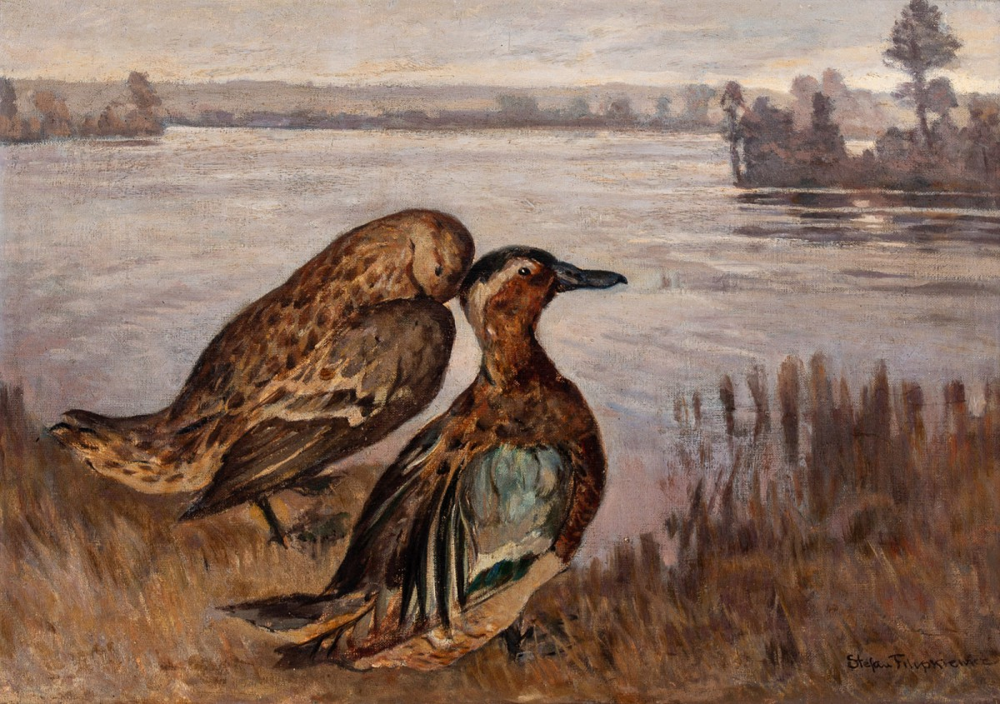

Kaczki (zwłaszcza kaczątka) są bardzo słodkie, więc to nie jest niespodzianka, że łatwo je znaleźć w naszej kulturze.
W sztuce kaczki idealnie dopełniają sceny rzek np. w "Dzikich kaczkach" Stefana Filipkiewicza.
W kinografii jest dużo znanych postaci, które są kaczkami np. Donald Duck lub Daffy Duck.

W muzyce, chyba każdy zna kultową piosenkę - "Kaczka Dziwaczka".